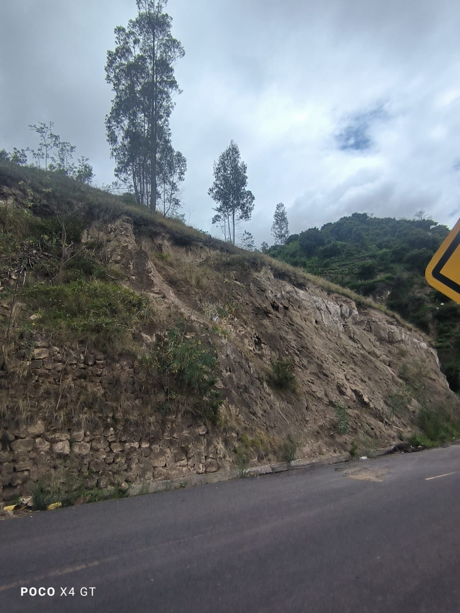
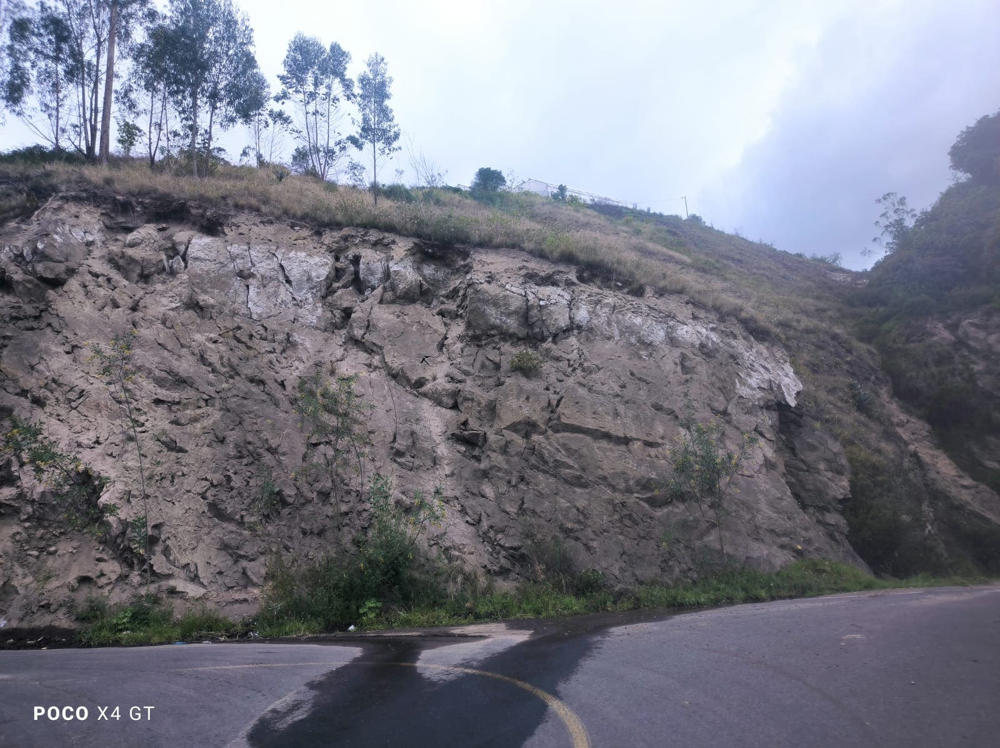
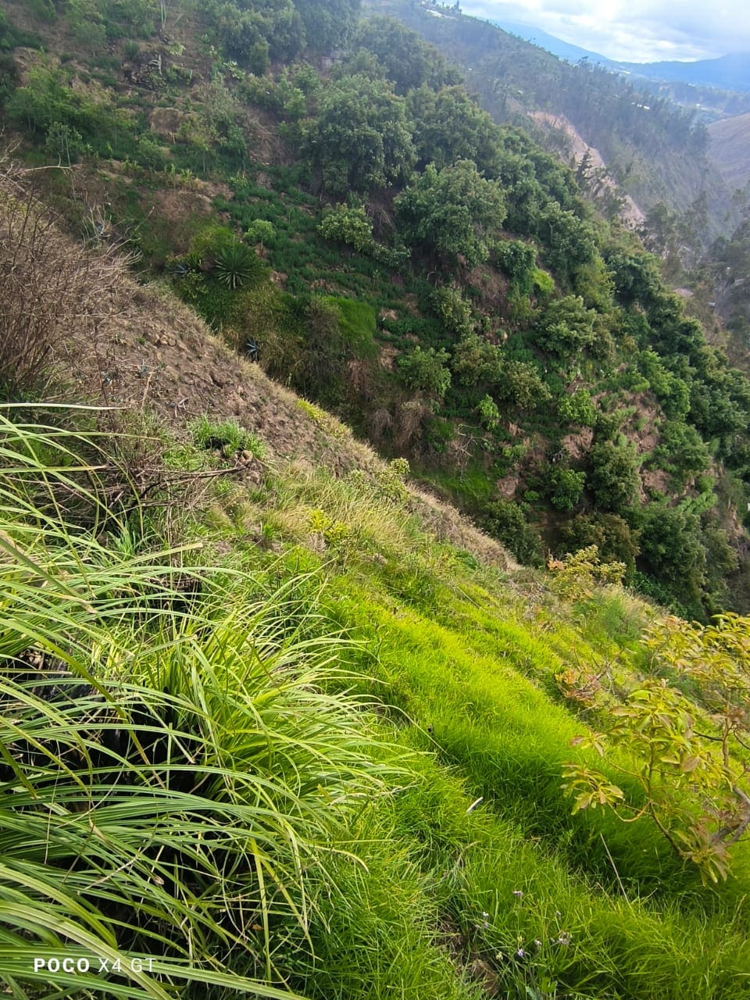
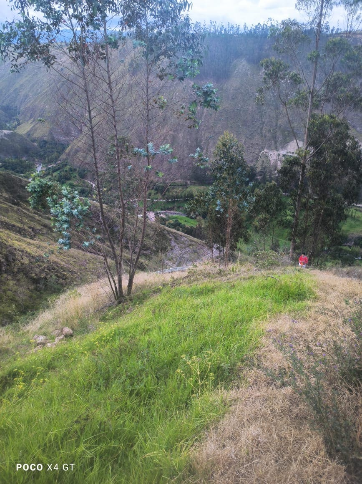

← volver al mapa
Terreno - EC-RJ-155428
EC-RJ-155428 · terreno · PELILEO, Tungurahua
★ Oferta destacada




Datos del remate
| Avalúo pericial | $11,424 |
| Tipo de bien | terreno |
| Área de terreno | 899.98 m² |
| Cantón / Provincia | PELILEO, Tungurahua |
| Dirección / Sector | Sector Pinllopata, de la Parroquia Chiquicha |
| Señalamiento | Segundo Señalamiento |
| Fecha de remate | 2026-08-21 |
| No. de proceso | 18332202303064 |
Análisis vs. mercado
| Avalúo por m² | $13/m² |
| Mediana de mercado en la zona | $55/m² |
| Descuento vs. mercado | 76.9% |
| Comparables usados | 58 |
| Radio de búsqueda | 2000 m |
| Puntaje | 92/100 |
Descripción completa del avalúo
terreno apto para cultivos de la zona, con pendiente de un area de 2899,98 m2, acceso a la via asfaltada.
Análisis de inversión (IA)
⚠ Dudosa — revisar bienEl descuento del 76.9% frente a la mediana de mercado parece atractivo, pero hay inconsistencias importantes en los datos que generan dudas antes de invertir tiempo y dinero. La descripción menciona un área de 2,899.98 m² mientras que el expediente registra 899.98 m², una discrepancia de exactamente 2,000 m² que debe aclararse antes de cualquier otro paso. Pelileo tiene mercado agrícola activo, pero un terreno con pendiente y uso limitado a cultivos locales tiene liquidez reducida.
A favor:
- Descuento significativo del 76.9% sobre la mediana de mercado con base en 58 comparables, muestra estadística razonablemente sólida
- Acceso a vía asfaltada, lo que facilita el ingreso y agrega valor a terrenos rurales en la sierra
- Zona de Pelileo con actividad agrícola conocida, lo que da sentido al uso del suelo descrito
- Si el área real es 2,899.98 m² (como dice la descripción), el precio por metro cuadrado sería aún más conveniente
En contra:
- El avalúo pericial de $11,424.21 es muy bajo incluso para la zona, lo que puede reflejar limitaciones reales del terreno como pendiente pronunciada o suelo de baja productividad
- Uso restringido a cultivos de la zona reduce el universo de compradores potenciales y dificulta la reventa
- La pendiente mencionada puede implicar costos adicionales para cualquier desarrollo o adecuación del terreno
- Tungurahua es zona de riesgo volcánico y sísmico, factor que afecta valoración y aseguramiento
Riesgos a verificar:
- DISCREPANCIA DE ÁREA CRÍTICA: la descripción dice 2,899.98 m² pero el dato registrado es 899.98 m² — diferencia de 2,000 m² exactos que sugiere error de transcripción o manipulación; verificar escrituras y plano catastral es indispensable antes de continuar
- Pendiente no cuantificada: no se especifica el grado de inclinación, lo que puede implicar tierra no cultivable, riesgo de deslizamiento o imposibilidad de construcción
- No se menciona disponibilidad de agua de riego, servicio esencial para terrenos agrícolas en sierra ecuatoriana
- Sin información sobre gravámenes, hipotecas o litigios pendientes sobre el predio
- Sin información sobre si existe ocupación actual del terreno o acuerdos de uso con terceros
- No se indica si el terreno está individualizado o forma parte de una propiedad mayor en proceso de partición
Generado por IA a partir de la descripción — no es asesoría legal ni financiera.
Esta ficha es una copia de lo publicado en el sitio oficial de remates
judiciales de la Función Judicial del Ecuador, para consulta — no
reemplaza el expediente judicial. remates.funcionjudicial.gob.ec no da
un link propio por remate, por eso se generó esta página aparte.
Antes de ofertar, el expediente debe revisarlo un abogado.